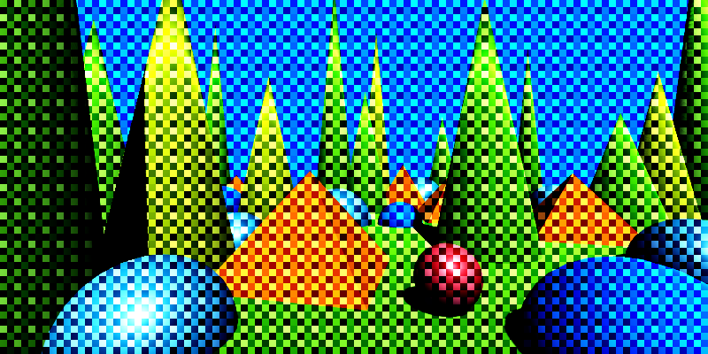
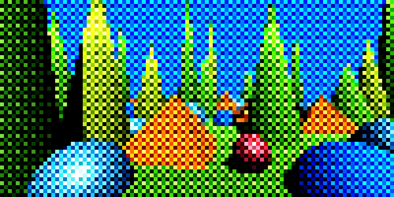
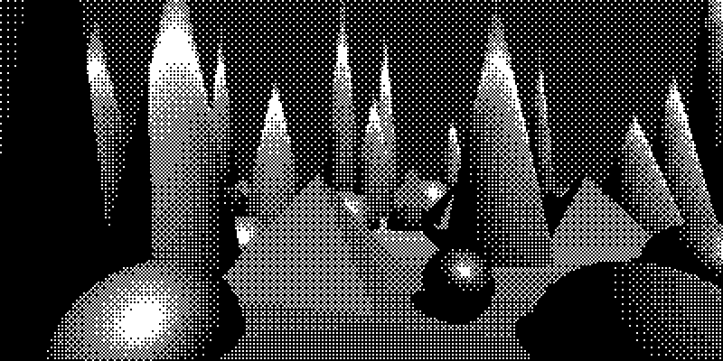
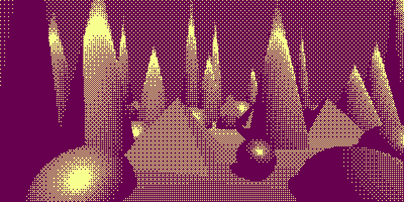
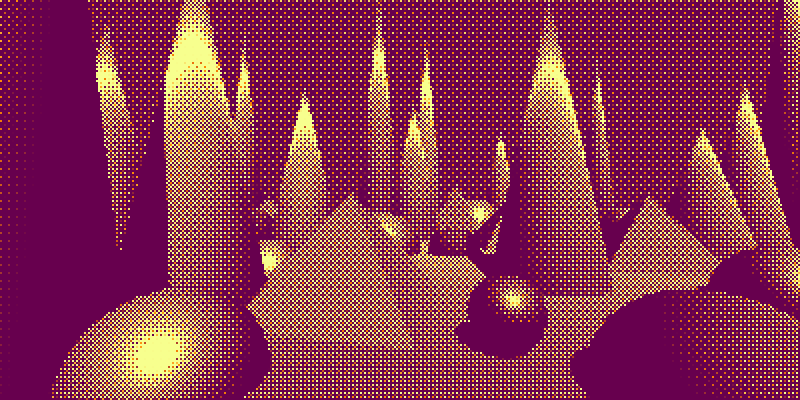
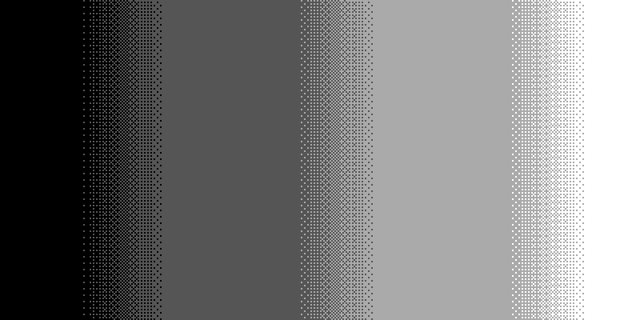
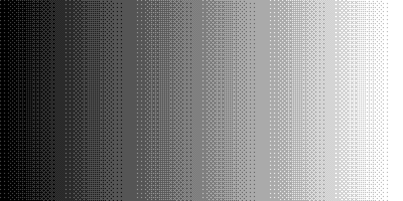
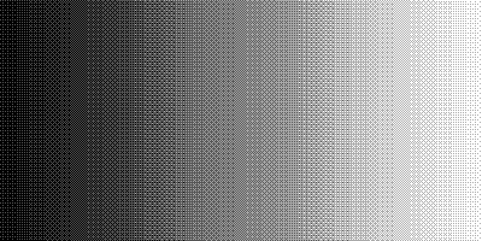

Dithering Tips
Tweaking the dithering post-effect is tricky. Many things must come together for it to look right. This guide is divided into three parts: Principles, Decision order, and Order in the stack.
Index terms: dithering guidelines, resolution, color depth, max filter uses
Principles
- Dithering (and pixelation) destroy detail, so in general the scene should not rely on too high detail. The bigger the pixel size, the more detail gets destroyed.
- The pattern and the quantization levels together determine the apparent color depth.
- In a difficult-to-understand way, the dithering pattern used affects the emotional impact of the scene, and it is worth spending time to explore it. Presumably different patterns have different connotations.
- Dithering by itself does not pixelate the image. For matrix-bias and grid-bias dithering, enable the Pixelate property on the effect and set it to the same pixel size as the dither. This snaps color sampling to cell centers and makes edges look neat.

Dithering without pixelation. Note the diagonal and round edges.

Dithering with pixelation. The edges are now pixelated too.
When applying matrix-bias dithering, fine lines cause a lot of visual artifacts, especially with moving cameras or objects. In this case, it may be visually better to not pixelate the scene.
A min or max filter can sometimes be useful to make lines thicker and render with fewer artifacts.
High detail can be better preserved when you do not pixelate.
Adding smooth noise changes the quantization patterns. This can make very geometric scenes more organic.
Emphasizing edges can make a scene easier to read. You can do this by:
- Adding an outline.
- Applying a min, max, or power-mean filter. This will add some edges to the scene. Min will add some dark edges, max will add some light edges, and power-mean could do either based on settings. Which works best depends a lot on where lowlights and highlights fall, so lighting is a critical factor.
Using different quantization levels for each channel, and different dithering patterns, affects the color balance. It does so in ways that can be hard to understand, but it is worth using this lever.
- Common choices are
2, 3, 4or2, 4, 4for quantization levels.
- Common choices are
Lowering the dither min darkens the scene, and increasing the max lightens it. Having them close together gives a cleaner look; having them far apart gives more dithering and therefore looks messier. Usually you want the min and max to balance each other out, equally far away from the center.
Increasing smoothness increases color depth and can make scenes easier to read. When used with texture-bias it often makes the overall look more organic (for example with hatching patterns) or more clean (for example with dots or line patterns).


To get monochromatic dithering, use the Desaturate effect before dithering.

Monochromatic dithering achieved by desaturating before dithering.
You can use the Tritone Map effect after dithering to color the image back again.

Set the smoothing in the dithering to non-zero to get the midtone too:

- Tweaking the min and max dithering amounts is easier when you use a color ramp to visualize how many colors are in use and how they are distributed. (See below.)
Using ramps
Use a color ramp when you tweak the dithering min and max amounts to help you see how it affects your distribution of grays and how many colors appear in the mix.

The min and max dither amounts are close together, giving dithering with thin transition regions.
The min and max dither amounts are further apart, giving dithering with thick transition regions.
The min and max dither amounts are even further apart, giving dithering with overlapping transition regions.If the min and max are close to each other, the transition regions are thin. If they are far apart, the transition regions are thick, and may overlap.
Decision Order
Tweaking is an organic, iterative process, but the overall order can make things easier or harder. The order below prioritizes bigger, more impactful decisions first. It is normal to go through the sequence two or three times, making smaller tweaks each pass.
- For static screenshots: the camera position. For video: the camera path.
- If you want one-channel color, apply a desaturation filter.
- The overall, crude lighting.
- Features that affect the apparent resolution and color depth:
- For matrix-bias and grid-bias dithering: the pixel size, whether to enable Pixelate, the matrix patterns, and the quantization levels.
- For texture-bias dithering: the texture pattern, texture scale, and quantization levels.
- Dither cleanliness using dither min and dither max.
- Features that affect the value distribution, tuned for readability and atmosphere:
- Lighting tweaks.
- The sky color and other important patches of color.
- Gamma.
- Color mapping.
- Noise, usually smooth noise.
- Features that affect edges: outlines, blur, min, max, or power-mean.
- Dither smoothness.
Order in the Stack
The effects affect each other, so the order matters. This is a typical order that works well and simplifies tweaking:
- Desaturation (if present).
- Gamma.
- Noise.
- Min, max, power-mean, blur.
- Dithering (with the Pixelate property enabled on the effect if desired).
- Color mapping.
Interesting effects can sometimes be obtained with a different order. For example, applying a min or max filter after dithering will lead to differently sized pixels.